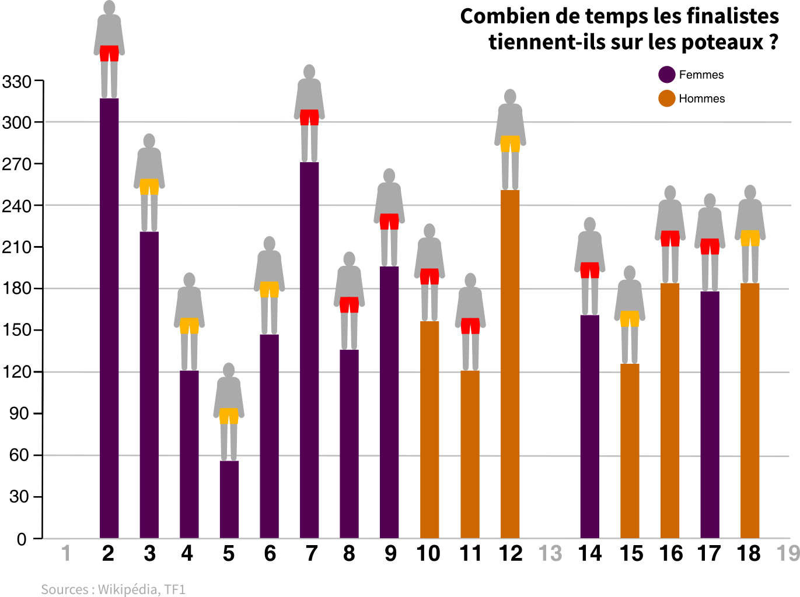

L’émission Koh-Lanta mêle téléréalité et compétition sportive depuis 2001 en France. Elle est née sur le modèle de l’émission américaine Survivor. Le principe est simple : à l’instar de Robinson Crusoé, des aventuriers se retrouvent sur une île et doivent rationner leur nourriture pour survivre entre les 35 et 45 jours que dure l’aventure. Ils s’affrontent lors d’épreuves qui leur permettent d’éviter un conseil, réunion dans laquelle un candidat de l’équipe est éliminé par ses pairs. Petit à petit, les équipes se réduisent. A la moitié de l’aventure, les aventuriers se rejoignent sur une seule et même île. L’immunité de groupe est remplacée par une immunité individuelle. Désormais c’est chacun pour sa peau. Et comme le dit Denis Brogniart, présentateur phare de l'émission : « A la fin il n’en restera qu’un. » Comme cette phrase, l’émission française est devenue culte et s’est rapidement singularisée de l’émission dont elle est l’adaptation.
L’incontournable épreuve des poteaux a participé à cette singularité française. Si elle n’est pas une création française contrairement à la légende répandue sur Internet, sa place dans le jeu est unique. Avec l’épreuve d’orientation, c’est l’épreuve inamovible depuis 2002. Elle permet à un candidat d’accéder directement à la finale. Traditionnellement, l’épreuve des poteaux voit s’affronter les trois derniers aventuriers de Koh-Lanta. Objectif : tenir debout le plus de temps possible.
Depuis maintenant dix-huit saisons, Denis Brogniart a marqué la présentation de l’émission. A chaque fois le même rituel : la célèbre phrase « La tribu réunifiée a décidé de vous éliminer et leur sentence est irrévocable » est prononcée lors de chaque élimination. Debout, face au candidat malheureux, il éteint son flambeau d’un geste ferme. C’est tout un cérémonial qui accompagne les phases du jeu.
Quel est le profil des candidats de Koh-Lanta ?

Une majorité des départements ont été représentés dans Koh-Lanta, ainsi que nos voisins francophones (la Belgique, le Luxembourg et la Suisse). Visiblement, la production tente de diversifier la provenance géographique des candidats d’une même saison. On observe tout de même que certaines zones sont plus représentées que d’autres : le Nord, autour de la région lilloise, l’Ile-de-France et le Sud-est, autour des Bouches-du-Rhône et des Alpes Maritimes. Ces données ressemblent au profil des candidats de téléréalité. On pense par exemple à Les Marseillais à... ou Les Ch’tis à..., deux émissions produitent par Alexia Laroche-Joubert, tout comme Koh-Lanta. En revanche dans le centre de la France, peu peuplé, peu de candidats ont participé au jeu.
Pour affiner le profil des candidats, il faut s’intéresser à leurs professions. Dans les vidéos de présentations des candidats, distillées au cours de la saison de Koh-Lanta mais surtout au cours du premier épisode, des informations sur leur vie « civile » sont livrées au téléspectateur.
Chez les participants de Koh-Lanta, certaines professions sont particulièrement représentées, notamment la catégorie des cadres : 12 % (40 participants sur 332), logiquement les sportifs (9 %), les commerçants (7 %) et, plus surprenant, celles et ceux travaillant dans le milieu de la beauté (7 %).
A noter également que la catégorie « Etudiants » est beaucoup plus importante statistiquement (11 %) que la catégorie « Retraités » (1 % du total des candidats).
Certains corps de métiers sont plus représentés que d’autres mais parmi les finalistes de Koh-Lanta, des candidats aux métiers non conventionnels sont récompensés. Voici quelques exemples de vainqueurs de Koh-Lanta : Isabelle est brocanteuse, François-David est escrimeur de spectacles médiévaux, Kevin est pilote de karting, Philippe est rempailleur et enfin Ugo est fauconnier ! Il semblerait qu’avoir un métier original aide à remporter Koh-Lanta.
Qui gagne Koh-Lanta ?
Pour être finaliste de Koh-Lanta, faut-il être jeune ? Chaque année, un candidat est présenté comme le « doyen » de la saison. Le recordman est Gégé, 65 ans lors de sa participation à Koh-Lanta 11. La plus jeune était tout juste majeure : Camille n’avait que 18 ans pendant Koh-Lanta 12.

Pour être finaliste de Koh-Lanta l’âge est un critère déterminant. Un seul candidat de plus de 50 ans est parvenu à se hisser en finale. Un finaliste de Koh-Lanta a en moyenne 31 ans, contre 33 ans pour l’ensemble des participants. 22 finalistes de Koh-Lanta sur 32 ont moins de 33 ans, ce qui correspond à 69 % des candidats.
Comment expliquer cet écart ? Sans doute parce que les aînés des équipes, identifiés comme des éléments plus faibles, sont souvent éliminés par leurs coéquipiers avant d’arriver à la réunification des équipes et donc avant la finale.
L’épreuve des poteaux est statistiquement plus remportée par des femmes, qui ont 62 % de chance de gagner cette épreuve. Pour expliquer cette surreprésentation des femmes, on peut avancer l’hypothèse qu’un poids plus faible permet de rester plus facilement en équilibre. Mais l’épreuve n’est pas plus facile à gagner pour une femme grâce à des plus petits pieds, contrairement à une idée répandue. En effet, Jules*, ancien producteur de l’émission et concepteur des épreuves pendant quatre saisons, ne le cache pas: « On a l’impression que toutes les surfaces (sur lesquelles les candidats se tiennent) sont identiques, mais elles sont réglées en fonction des pointures des candidats », car sinon une femme aux pied très petits « ne tomberait jamais », selon ses propres mots. A noter tout de même qu’à partir de la saison 10, l’épreuve a été réformée car « cette épreuve était systématiquement remportée par une femme ». Les tailles des plateformes ont été modifiées (voir ci-dessous).
Cependant, les hommes sont plus nombreux à gagner les 100 000 € promis au vainqueur : ils sont 61 % à remporter Koh-Lanta. C’est plus qu’un rattrapage qui s’opère par rapport à l’épreuve des poteaux. Dans le détail, sur les seize saisons, douze proposent une finale mixte. Les quatre restantes sont des finales entre deux hommes (saison 10, 11 et 12) ou, marginalement, entre deux femmes (saison 3).
Celui qui tombe en dernier à l'épreuve des poteaux est qualifié pour le vote final de Koh-lanta, qui désigne le grand gagnant du jeu. Ensemble, ils affrontent le conseil final, réunion des éliminés qui désignent l’aventurier vainqueur de la saison. C’est donc un vote, purement partial, des membres de ce jury. Si majoritairement, le gagnant des poteaux choisit un adversaire du sexe opposé, le jury final penche du côté des hommes. Si l’on retire la saison avec une victoire mixte ex-aequo et celles avec des finalistes du même sexe, on peut affirmer que le jury final préfère désigner des hommes gagnants : 7 hommes contre 4 femmes.
Les candidats qui se sont démarqués, parfois malgré eux
1 jour
C'est le temps qu'a tenu la candidate malheureuse Joëlle Bourlier. Si elle a partagé quatre jours en compagnie des autres aventuriers (notamment dans l’avion), elle n’est restée qu’un seul jour sur l’île de Koh-Lanta, avant de se faire éliminer du jeu dès la première épreuve. Elle déclarera après son aventure, visiblement fâchée, à l’antenne de Jean Marc Morandini : « J’ai été trompée, manipulée, humiliée. »
Requin
Lors de la saison 4, Raphaël est devenu un candidat mythique. Avec une simple corde, il a pêché un requin d’1 mètre 50.
Bébé Koh-Lanta
Les candidats Jesta et Benoît se sont rencontrés à Koh-Lanta et sont restés en couple après l’émission. Jesta est enceinte et selon les propos de Denis Brogniart lui-même, ce petit garçon sera le premier « bébé Koh-Lanta ».
Muscle
Le candidat le plus musclé est définitivement Anthony de la saison 11. Accro au sport, il n’a cessé de prendre du muscle depuis qu’il est sorti de l’émission. Il a même participé au championnat du monde de fitness et de bodybuilding.
9h30
C’est le temps que Gilles a passé la main sur un totem, lors de la première finale de Koh-Lanta. Cette épreuve sera finalement remplacée dès la saison 2 par la mythique épreuve des poteaux.
Des candidats qui tiennent moins longtemps sur les poteaux
Les candidats issus de la tribu rouge ont plus remporté l’épreuve des poteaux que les jaunes (9 rouges contre 7 jaunes). 10 femmes (représentées en violet) ont remporté l’épreuve des poteaux sur 16 vainqueurs. Le record pour un candidat debout sur le poteau est détenu par le premier candidat à avoir remporté l’épreuve, Gilles, qui a tenu 5h16. Par la suite les temps oscillent, mais restent généralement bien en dessous de ce record initial. A partir de la saison 14, la moyenne du temps resté sur les poteaux est de 2h45. Face à ces données, Jules, l'ex-producteur, nous confirme « Aujourd’hui, ce ne serait plus possible de rester 5h16 sur un poteau. »
Et pour cause, l’épreuve a connu beaucoup de changements. Pour qu’elle ne soit pas interminable, les producteurs de l’émission imaginent des façons de la compliquer. Jules l’admet : « Près de six heures de tournage pour la saison 2 ce n’est pas possible, donc on a réfléchi autour de l’épreuve pour la raccourcir ». Ils ont alors l’idée de réduire la taille de la plateforme sur laquelle les candidats tiennent debout. « Rendre l’épreuve plus courte c’est aussi préserver la santé des candidats. » Jules se souvient d’une candidate tombée des poteaux, au bord de l’évanouissement. « On ne veut pas transformer cette épreuve en moment de torture. »
Désormais, après au moins une heure d’épreuve, Denis Brogniart s’écrie : « Tirez sur la cordelette », « Enlevez la première solive », « Enlevez la clavette arrière ». Jules nous confie que cette règle varie au cours des saisons : « Normalement on décide la veille du tournage à quel moment de l’épreuve la plateforme se réduira, selon l’état de santé des candidats. » Ces choix sont essentiels pour la durée de l’épreuve. « On sait que quand on enlève la troisième les candidats restent rarement plus de trois minutes sur le poteau. »
La saison 7 marque un tournant : l’épreuve des poteaux commence à se disputer pieds nus ! Cela rend-il l’épreuve plus difficile ? Pour Jules, « c’est un débat qui est régulièrement sur la table ». Enlever les chaussures pour l’épreuve des poteaux, c’est d’abord un choix esthétique il l’avoue : « Les gros plans n’étaient pas beaux car il y avait des marques de chaussures visibles. » Il fallait éviter que les poteaux deviennent « une épreuve entre Adidas et Nike ».
Signe de l’importance de cette épreuve : lors de la saison en cours, les candidats s’affrontent sur les poteaux dès leur entrée dans le jeu. Un scénario inédit : 21 poteaux, 21 candidats. Les trois candidats restés le plus longtemps deviennent chefs d’équipe et ont la charge de former leur tribu. Mais cette épreuve mythique sera disputée une deuxième, dans sa version « classique » à la fin de l’aventure. Une compétition qui s’annonce plus rude que d’habitude puisque les candidats ont déjà eu un avant-goût de l’épreuve dès le premier jour.
Qui va remporter les poteaux cette année ?
Grâce à toutes ces données sur les candidats et les finalistes, nous sommes en mesure de vous livrer notre pronostic sur l’épreuve des poteaux de la saison 20. Qui seront (peut-être) les trois candidats à s’affronter pendant des heures sur des rondins de bois ?
Angélique : Si on devait parier sur une seule candidate, ce serait elle ! La gérante de pizzeria de 24 ans a tous les atouts pour se retrouver sur les poteaux.
Clo : Elle a beau être appelée par un diminutif par ses coéquipiers et Denis Brogniart en raison d’un doublon de « Chloé » cette année, la candidate bleue de 28 ans a prouvé sa force et son endurance lors des épreuves d’immunité.
Cyril : Le seul homme encore rescapé de la tribu rouge pourrait bien atteindre l’épreuve finale. Apprécié par tous les candidats et plutôt bon sur les épreuves individuelles, il a toutes ses chances d’arriver sur les poteaux !
Mais attention, cette prédiction est soumise aux alliances des candidats et aux éliminations surprises. En plus d’être fortes, les trois candidates devront se montrer stratèges pour obtenir leur place sur les poteaux. Il faudra aussi passer entre les fourches caudines de l’épreuve d’orientation. Chaque année, l’un des candidats ne sait pas utiliser une boussole, compliquant sa qualification pour l’étape suivante, explique Jules. Un mystère qu’il avoue encore irrésolu après 20 saisons.
* Le prénom a été modifié pour préserver son anonymat.
Sofiane AKLOUF, Paloma DE DINECHIN & Tom FÉVRIER
Méthodologie
Les données utilisées proviennent pour l'essentiel des pages Wikipédia des différentes saisons de Koh-Lanta.
Pour l’infographie représentant l'origine géographique des candidats, nous avons fait le choix de ne montrer que les candidats habitant en France, en Belgique, en Suisse ou au Luxembourg : Sophie, candidate de la saison 20 et résidant au Portugal n'y figure donc pas.
Pour l’infographie concernant les métiers des candidats, nous avons récupéré sur Wikipédia les données concernant les 332 candidats toutes saisons confondues de Koh-Lanta, y compris la saison 20 qui se déroule actuellement. Les métiers ont ensuite été regroupés dans des catégories pour dégager des tendances. Ces catégories sont elles-mêmes visibles dans trois groupes distincts: actifs, non-actifs et étudiants. Pour des questions de lisibilité, nous avons regroupé des métiers en contact avec la clientèle tels que cuisinier, maître d'hôtel, conducteur de bus dans une catégorie « Tourisme/transport ». Lorsque la description du métier d’un candidat nous le permettait, nous l’avons mis dans une catégorie thématique: beauté, sport, santé, artisanat, etc. Quand la description du métier n'était pas assez précise, nous avons considéré le statut professionnel du candidat : cadre, ouvrier, employé, etc.
Plusieurs saisons n’apparaissent pas dans la visualisation des poteaux, ni dans les statistiques sur les vainqueurs de l’épreuve. La première saison, présentée par Hubert Auriol, ne proposait pas aux candidats de rester debout sur un poteau mais de toucher le totem de Koh-Lanta sans bouger. La treizième saison a été annulée par la production après le décès d’un candidat, Gérald Babin ; la saison suivante a été comptabilisée comme la saison 14. La dix-neuvième saison a connu le même sort après une agression sexuelle présumée. Nous avons fait le choix de ne pas comptabiliser l’épreuve des poteaux initiale de la saison 20 puisqu’elle réunit tous les candidats et ne correspond pas aux standards de l’épreuve des poteaux à la fin de l’émission.
Pour la comparaison des vainqueurs par genre, il n'y a qu'un seul vainqueur pour l'épreuve des poteaux mais il peut y avoir deux gagnants ex-aequo pour certaines saisons (Isabelle et Delphine pour la saison 3, Jade et Kévin pour la saison 7) : nous avons donc comptabilisé deux victoires féminine pour la saison 3 et une victoire masculine et une victoire féminine pour la saison 7. Comme il n'y a pas eu d'épreuve des poteaux à la saison 1, le gagnant Gilles n’a pas été comptabilisé pour ne pas fausser la comparaison.
Pour l’infographie présentant le temps passé sur les poteaux, nous avons visionné les dix-huit finales des saisons de Koh-Lanta, en notant la minute à laquelle Denis Brogniart signale le temps du dernier qui tombe à l’épreuve des poteaux. Lorsque Denis Brogniart omet de donner précisément le temps, nous avons additionné les temps successifs qu’il annonce pendant l’épreuve. Il arrive par exemple que le présentateur annonce 1h30 d’épreuve puis qu’il précise que, 15 minutes plus tard, un candidat est tombé. La couleur attribuée à un candidat est celle de sa tribu d'origine : jaune ou rouge.
Pour la prédiction du gagnant des poteaux, nous avons repris les données précédentes. Pour éviter d’écarter un candidat qui ne remplirait pas l’un des critère du gagnant type des poteaux, nous avons établi un système de points. Par exemple, plutôt que d’écarter tous les hommes, les candidats se sont vu attribuer un point, contre deux pour les candidates. Ces points ont été attribués en fonction des statistiques : 62 % des gagnants des poteaux sont des femmes, donc on considère qu’une femme a environ deux tiers de chance de gagner. Le même procédé est appliqué pour l’âge : deux points pour un candidat ayant moins de 33 ans, un seul au-delà. L’origine géographique est aussi prise en compte : deux points pour un candidat qui réside en Ile-de-France, dans le Nord ou dans le Sud-Est, un seul point pour les autres. Enfin, les professions des candidats permettent d’attribuer deux points en cas de métier « original », c’est-à-dire en marge de la classification établie avec des grands thèmes ; un point pour les autres. Au total, un candidat remporte quatre à huit points. En cas d'égalité, le choix a été fait de privilégier un candidat de la tribu rouge : statistiquement, ils remportent davantage l'épreuve des poteaux que leurs camarades jaunes. Le maximum est atteint par Angélique. Sept points sont remportés par Clo, six points par Cyril.